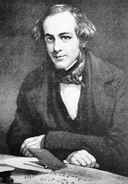

The House of Rawlinson
Origins: From Norman Conquest to Quaker Fortune
The Rawlinson family traces its noble ancestry to the days of the Norman conquest — when families of Raulyns and Rawlynes first set foot upon English soil. They settled in the shires of Lancashire, Oxfordshire, and Yorkshire, laying the groundwork for centuries of industrious and occasionally illustrious Rawlinsons.
By the 16th century, Stanley's branch of the family had risen to prominence as devout Quakers — albeit ones whose fortunes were first made in the turbulent and morally complex world of the West Indian trade. From there, the family's wealth and influence only grew.
The London Years: Wine, Wisdom, and the City
Stanley's 4th great-grandfather, Daniel Rawlinson, was a London vintner of considerable repute — friend to Samuel Pepys, and proprietor of The Mitre Tavern in Fenchurch Street. Daniel's convivial establishment became a haunt of thinkers, merchants, and adventurers alike — a fitting start for a family destined to produce many of England's more curious minds.

His son, Sir Thomas Rawlinson (1647–1708), rose yet higher. A successful merchant and civic leader, Sir Thomas served as both Lord Mayor and Sheriff of London, fathering no fewer than fifteen children. Among them were men of learning and letters whose names endure in the annals of scholarship:
- Thomas Rawlinson, FRS (1681–1725) — a barrister and renowned bibliophile
- James Rawlinson, FRS (1686–1732) — merchant, Sinologist, and Stanley's great-great-grandfather
- Richard Rawlinson, FRS (1690–1755) — antiquarian, collector, and benefactor of the Bodleian Library, Oxford
Merchants and Milliners: The Road to Luton
The scholarly line continued with Thomas Daniel Rawlinson (1717–1786), a spice merchant who relocated the family from London to Luton, Bedfordshire around 1740. There, trade and enterprise flourished anew.
His son, Edward William Rawlinson (1754–1831), took a different turn — becoming a prosperous milliner. Edward married Agnes Mary Seymour (1755–1832), daughter of a wealthy Luton industrialist, uniting two vigorous business families. Together they had five children, who would scatter across the changing landscape of Georgian England:
- Abram Tysack Rawlinson (1779–1831) – Breeder of racehorses in Oxfordshire
- Commander Thomas Fawcett Rawlinson (1781–1852) – Royal Navy officer and father of Stanley
- Rev. Ebenezer George Rawlinson (1782–1870)
- Alice Elisabeth Rawlinson (1784–1809)
- Captain Earnest Stanley Rawlinson (1785–1811) – Fell in the Peninsular War
- Edith Katherine Rawlinson (1786–1873)

Stanley's Grandfather

Stanley's Grandmother

Uncle Abram

Uncle Earnest

Uncle Ebenezer

Aunt Edith
The Naval Line: From Trafalgar to the Drawing Room

Commander Thomas Fawcett Rawlinson

Mary Elisabeth Ransford
Stanley's father, Commander Thomas Fawcett Rawlinson, entered the Royal Navy as a boy of twelve in 1793. Serving aboard the HMS Agamemnon and later HMS Victory, he fought at Trafalgar (1805) — where a French cannonball cost him his leg, but not his spirit. During his recovery, he met Mary Elisabeth Ransford (1786–1839), daughter of a London banker, whom he soon married.
Thomas retired as a Commander in 1819, after years of loyal service and London-based duties at the War Office. With his wooden leg and a quiet humour, he retired to Luton — to keep bees and raise nine remarkable children.
The Children of Commander Rawlinson and Mary Elisabeth Ransford

Sir David Seymour Rawlinson
 - Copy.jpg)
Col. Charles Creswicke

Capt. Ambrose Tysack

Rev. Hezekiah Daniel
- Sir David Seymour Rawlinson (1806–1877) – Gentleman farmer of Derbyshire
- Col. Charles Creswicke Rawlinson (1807–1840) – Killed in action during the First Opium War
- Rev. Henry Ransford Rawlinson (1808–1831) – Died in the Cholera pandemic
- Capt. Ambrose Tysack Rawlinson (1809–1858) – Soldier of empire, fell at the Taku Forts, China
- Cornelius Abram Rawlinson (1810–1811) – Died in infancy
- Rev. Hezekiah Daniel Rawlinson (1811–1852) – Clergyman of Tiverton, Devon
- Bertram Jacob Rawlinson (1812–1817) – Died aged five
- William Jebediah Rawlinson (1813–1831) – Lost to the Cholera of 1831
- Stanley Trafalgar Rawlinson (1814–1914) – The Adventurer
Cousins and Contemporaries: The Oxfordshire Heirs

Sir Henry Creswicke Rawlinson

Rev. George Rawlinson
While Stanley's father served at sea, his uncle Abram Tysack Rawlinson settled in Oxfordshire, breeding fine horses and acquiring a handsome estate. His line produced two of Victorian England's most distinguished minds:
- Sir Henry Creswicke Rawlinson (1810–1895) – Soldier, politician, Assyriologist, and 1st Baronet
- Rev. George Rawlinson (1812–1902) – Scholar, historian, theologian
Both were Stanley's cousins — his equals in curiosity, though not in recklessness.
Stanley Trafalgar Rawlinson (1814–1914): The Adventurer

Sir Stanley, c. 1885
Born in the wake of Trafalgar, named for his father's sacrifice, and destined for a century of extraordinary life, Stanley Trafalgar Rawlinson embodied the restless spirit of his age.
His story — of travel, invention, exploration, and scandal — would take him from the drawing rooms of Luton to the souks of Constantinople, from the libraries of Oxford to the deserts of Egypt.
He was the last great scion of a family whose history reads like the story of England itself — noble, flawed, curious, and forever reaching beyond the known world.